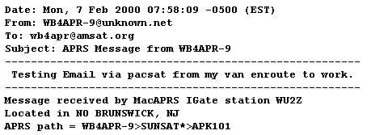
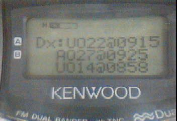

(*) ECHO's position updated by ground based command stations.
External Message Keyboard for the D700: And you don't even have to use the DTMF pad to enter messages. There is an interface to a standard PS-2 type keyboard that makes it easy to send messages from the D700 that just plugs into the Mic jack: D700 Keyboard (PS2) interface.
Thousands of HAMS and many AMSAT members have these digital Satellite-Communicators capable radios already. Lets USE them!
PRESENT SITUATION: Recently (July 2006) ECHO has enabled the Packet Digipeater for 9600 baud. You can do this easily with a D7 or D700 APRS radio. The APRS uplink is on 145.86 and the downlink is 435.150 +/- 10 KHz doppler. Set your TNC baud rate to 9600 and set the PATH to go VIA PACB-1. Notice that the current downlink is almost 17 dB worse than the PCSAT downlink and almost 24 dB less than the ISS packet system. This is beacause the downlink is running at only 0.3W for power conservation, and using UHF instead of 2m to omni antennas suffers an additional 9 dB loss. But getting UP into ECHO is identical to getting into the other birds.
ECHO CONFIGURATION: We hope that ECHO can support this live user-to-user communications whenever the digital BBS is on, even while other modes are in use because of its multiple receivers and 2 independent transmit streams. This UI digipeating mode in support of mobile and handheld users shares one of the receivers with the PACSAT file sharing system. This does not compete with the popular FM voice transponder. To help ECHO format it's STATUS packets for visibility on these mobile radios, here is a (draft APRS spec for ECHO). For historical purposes, here was the original pre-launch APRS proposal .
ACTIVATION: You can monitor the ECHO (AO-51) downlink at anytime with your APRS system or D7 and D700 radios (and a beam). Ocasionally, you will see the spacecraft's STATUS packet that looks something like this:
PACB-1>LSTAT:....... d:0 ........
If d:1 then digipeating is enabled, if d:0 then it is disabled.
BACKGROUND: The reminder of this page is a summary of all the prior use of the amateur satellites in this mobile digital communications applications and shows the rich legacy of this mission. We call it ASTARS...
APRS LIVE: First, to get a view of what APRS is all about, Click here to see the LIVE real-time feed of APRS packets heard all over the world. Zoom into your area and see who you know...
ASTARS is an Amateur Radio Mobile Tracking and Communications System for Reporting position, status, and messages to and from Handhelds and Mobiles in distant locations via Amateur Satellites using off-the-shelf amateur equipment as shown above or See W4HFZ's Installation. Many AMSAT satellties have supported this mission and our objective is to encourage more transponders and to even operate more of them on the same frequency to improve satellite access times for the users. Since APRS uses digipeaters generically using generic digipeater aliases, the users dont have to configure for each different digipeater. Whatever is in view, will support their packets. One bird gives about 6 passes a day access. Two birds would double this, yet the separate satellites would be transparent to the user. This concept was tested using PCsat and ISS and it worked beautifully. See the test summary or the full story and images on the PCsat web page. There is much history on the use of ASTARS via AMSATS as noted below:
1200 Baud PSK ASTARS was used on AO-16 and IO-26 [See history]
1200 Baud AFSK ASTARS was and is used on MIR, SAREX, ARISS, SunSat, PCsat, PCSAT2
and ANDE. [See history]
9600 BAUD ASTARS was used via UO-22 and PCsat, and now could be used via ECHO!
Handheld digital communications became a reality when Kenwood introduced the 1200/9600 baud APRS data mobile radio, the TM-D700A and the TH-D7(G) Handheld. These dual band data radios with built-in TNC's and front panel APRS displays make it possible to send and receive the very short APRS style comunications via any 9600 Baud PACSAT if digipeat is enabled (such as UO-22 and now ECHO). Thus, these two radios are off-the-shelf satellite data terminals ready for ASTARS and they need NO PC or other accessory. They can send and receive all data on the radio front panel with only the proper mobile whip antenna! (see below).
INTERNET LINKED DOWNLINK STATIONS(SatGates): The presence of the Internet makes possible the linking together of multiple disparate downlink sites all over the world to yield a tremendous gain in reliability through space and time diversity reception. These SAT-Gates combine all packets heard into the existing worldwide APRS infrastructure for delivery to any compatible APRS station in the network.
This WEB PAGE describes how ECHO can be used to bring Amateur Radio into the SATPHONE generation, beginning with its Limitations, expected Operations scenario, the TMD700 and THD7 set up for mobile operation, Linking traffic to/from the worldwide APRServe system via SAT-Gates, how the SAT-Gates operate, and how the terrestrial APRS system can distribute satellite access times to the mobiles using minimum bandwidth on the terrestrial system. The cartoon below shows how any APRS satellite contributes to the Global Real-Time connectivity for End-to-End message capabiility anywhere on the planet. Any packet launched anywhere, can go anywhere, and the sender needs NO PATH INTELLIGENCE. Every packet goes INTO the internet linked system. But it only comes back to RF if the recepient has been seen by an IGate in its local area. The format is AX.25 Packet throughout, even while transiting the internet links... THINK CELLULAR but using AX.25 packet.
USER DATA BURSTS: The APRS Mic-E format used by the Kenwood radios transmits all of the following information in only a fraction of a second at 9600 baud. The Mic-E protocol is highly efficient and only needs 9 bytes plus the STATUS text bytes in the data part of the packet. Thus, hundreds of users per pass can send a lot of information via ECHO while sharing the transponder equitably.
APRS MESSAGES: In addition to the above position and status information, these radios can send APRS text messages and Email. For new satellite operators unfamiliar with APRS messages, it should be understood that an APRS message is a single LINE of text. Most messages stand alone, but are occassionaly strung together if it wont fit on one line. See a photo of a 15 byte message received on the TMD700 radio. (The maximum length is 64 bytes).
APRS EMAIL: Simillarly, any APRS operator can initiate an EMAIL message from his HT or mobile radio. Just like other APRS messages, it is also only ONE LINE and the one line INCLUDES the full email address. This forces brevity! Here is an Email I transmitted from my D700 mobile enroute to work one day. Notice that the SINGLE packet entered into the D700 was simply:
Yet, here is how it was received by my Email system after being SAT-Gated to APRServe and from there, picked up by the EMAIL Engine at WU2Z's and shipped out as regular Email:

OPERATIONS SCENARIO: Operations is simple. If your radio is set to 9600 baud and tuned to the ECHO downlink, your HT will receive ANY messages directed to it via the satellite. It will also receive bulletins and status from the satellite and other users. Similarly you can send messages including one-line Emails by uplinking to the satellite. To encourage a common and consistent operations procedure, the following is recommended:
SAT-GATE OPERATIONS: See the details in the original ASTARS web page about how to set up a special ECHO SAT-GATE... The key to the very high success rate of using ASTARS via LEO satellites such as ECHO are because unlike previous amateur satellite activity, we can combine the outputs from any number of omni antenna satgates nationwide and the result is over a 99.96% chance of capturing every packet over the USA!

This map shows how 6 ground stations or more using only omni antennas were needed to give reliable coverage for the lower powered PACSATS. But with ECHO, only a few satgates will be needed to fully link the ECHO ASTARS mission to the existing global APRS internet linked system of groundstations. Any station with a whip antenna, a Kenwood or Alinco 9600 baud TNC/Radio with a PC and full time internet access can be a satgate! If their radio is a D700 or D7, then software can also autocompensate for Doppler and auto-tune to other ASTARS satellites when they come into view! NEWS! APRStk (see below) now AUTO TUNES for any satellite in view!
SATELLITE TRACKING AND PASS PREDICTIONS: APRS mobiles should only uplink during the actual satellite pass to keep the uplink clear of non-essential transmissions. To this end, we have two very good methods:

Using APRStk in this manner to alert everyone on the APRS frequency including mobiles and handhelds to satellites inview can be thought of almost as a "WEB" server to your radio's front panel. The 10 minute schedule is transmitted to the radio's DX-LIST. Thus, our mobile satellite users can get the PASS info they need without lugging along a laptop. This shows you what the Handheld THD7 HT will capture and display about the satellites. First is the DX-SPOT list showing that there are three satellites UO22, AO27 and UO14 coming up in the next 80 minutes and when.



The next two screens show when the satellite is in view. They show the Range, Azimuth Uplink and Downlink Frequencies, Doppler and distance to the satellite. Just perfect for aiming your handheld antenna. For more details see APRS Satellite Resources.
CLICK HERE to see the D-700 display of a satellite object.
If you already have APRSdos, download either APRStk or APRSdata. If you dont already have APRSdos installed, then download APRS848 too and install it first with PKUNZIP -d or WinZIP.
TM-D700 and TH-D7(G) SETTINGS: Here is a list of my minimum setups for the new Kenwood TM-D700 data mobile and TH-D7(G)data handheld for front-panel-to-Satellite mobile communications via a digipeating PACSAT in Mode-J or Mode-B:

See also the general purpose set-ups for using the TM-D700
radio on conventional APRS mobile applications.
TRANSMITTING: Notice, the new D7(G) has the DCD SENSE command so that the TNC will operate full duplex in APRS mode. BUT, In APRS mode, the D700 does not have this ability to set the internal TNC to FULLDUPLEX. THus, while your D700 mobile receive BAND is receiveing data the radio will not transmit. Understanding this problem will be your key to success. If the Satellite has periodic quiet times on the downlink (SUNSAT) then operate normally. It will get a chance to key up. But if the downlink is 100% in use as is normal for UO-22 and all the other PACSATS, then here are some ways to force a transmit:
D700 EASY REMOTE CONTROL SATSTATION: Further, using the remote control capability of these radios makes it possible to operate a complete automatic tracking/tuning rotator controlled suit-case portable system that can be operated over any length of 8 conductor wire (no coax needed!). Great for demos, or vacation operating from your motel room. See also the Rotator interface
ANTENNAS: With the 8 Watt Echo, ANY UHF or dual band mobile antenna should work perfectly. Even though commercial dual-band antennas put all the gain on the horizon and have minimum high elevation gain, the higher power of ECHO and the fact that it is closer when it is higher will assure good coverage horizon to horizon. Because of the short coax run in a car, and no need for a PREAMP, a simple vertical WHIP antenna in the center of your car roof is an ideal mobile OMNI antenna for both VHF and UHF satellites.
With previous satellites, however, this whip should have been a simple 19" whip which would have acted as a an 7+ dB 3/4 wavelength whip on UHF (yellow plot below) to get the gain needed to hear the weak UHF downlinks. This same whip also worked perfectly on the VHF birds. My D700 would capture packets when the older PACSATS such as UO22 were above 25 to 30 degrees for a few minutes, but with the 8 Watt ECHO downlink, horizon to horizon coverage should be possible on most passes. Here is a plot of the EZ-NEC produced gains of three whip antennas including the path loss due to range. My 3/4 wavelength antenna picks up the sats at about 20 deg. Better than shown here.

To validate the data for the 3/4 wave vertical, I built a 1575 MHz scale model of the antenna AND car roof and connected it to a GPS receiver and my SIGPLOT.BAS program. Letting it run all night, gives an all-sky GAIN PLOT using the satellite signal strengths as the RF source. Thus, over time, you get known RF from all angles and all azimuths and the SIGPLOT program produces a real-world plot of actual antenna pattern as shown below. I did it twice, the Green is the 3/4 and Red is the 1/4 wave. Notice the high angle gain of the 3/4 at all angles above about 25 deg. Although the 1/4 is better down to about 10 degrees, the 6 dB greater path loss due to the greater distance to the satellite (and trees and buildings) cancels any advantage here for the weak PACSAT downlinks. The car roof I modeled was the size of a compact sedan.

TUNING for ECHO: Doppler tuning the UHF downlink is trivial to do by ear. Although 9600 baud data sounds just like open-squelch noise, it does have a "quality" to it that can easily be heard by ear when the receiver is not centered in the data bandwidth. All passes begin at +10 KHz and move down in 5 KHz increments down to -10 KHz. It only takes a fraction of a second to test QSY to hear if it is time to tune or not. Eventually you can hear when it is time... For omni antennas where you wont hear the satellite on the distant horizon, then start at +5 and move twice to -5 during the brief pass.
9600 BAUD DOWNLINK EFFECTIVENESS: The APRStk screen shot below plots the packet count over time (in red) along with the Elevation Angle (in green) for a 35 degree pass of KO-23 as received on a vertical 19" whip antenna by the Kenwood HT. ECHO will be many dB better!

COME JOIN US LIVE ON THE BIRDS!
DISCLAIMER: This ASTARS concept has not been considered, endorsed, or approved for operation via any existing satellite other than AO16, LO19, IO26, SO35, OPAL, SAREX, PCsat, Sapphire and ARISS. It is posted here to encourage experimentation for for consideration for future applications.
Return to the APRS HOMEPAGE

{kind=link}
{kind=link}
{kind=link}
{kind=link}
{kind=link}